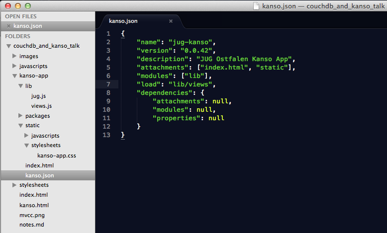

What we need:
The result will be a pure CouchApp - YaY ;-)
Check all CouchApp tools at http://couchapp.org
sudo npm install -g kanso
npm http GET https://registry.npmjs.org/kanso
npm http 200 https://registry.npmjs.org/kanso
npm http GET https://registry.npmjs.org/kanso/-/kanso-0.2.1.tgz
npm http 200 https://registry.npmjs.org/kanso/-/kanso-0.2.1.tgz
npm http GET https://registry.npmjs.org/mime/1.2.4
[...]
/usr/local/bin/kanso -> /usr/local/lib/node_modules/kanso/bin/kanso
/usr/local/bin/kanso_completions -> /usr/local/lib/node_modules/kanso/scripts/autocomp.js
kanso@0.2.1 /usr/local/lib/node_modules/kanso
├── semver@1.0.9
├── mime@1.2.4
├── underscore@1.1.7
├── async@0.1.15
├── csv@0.0.9
├── parser@0.1.2 (tokenizer@0.1.0)
└── prompt@0.1.11
check it
kanso -v
0.2.1
kanso
Usage: kanso COMMAND [ARGS]
Available commands:
help Show help specific to a command
push Load a project and push to a CouchDB database
upload Upload a file or directory of JSON files to DB
show Load a project and output resulting JSON
createdb Create a new CouchDB database
deletedb Delete a CouchDB database
listdb List databases on a CouchDB instance
replicate Exchange data between databases
transform Performs tranformations on JSON files
uuids Returns UUIDs generated by a CouchDB instance
pack Pack a package into a .tar.gz file
publish Publish a package to a repository
unpublish Remove a published package from a repository
install Installs a package and its dependencies
update Updates a package to the latest compatible version
clean Removes unused packages from the package directory
clear-cache Removes packages from the local cache
ls Builds a project and reports a list of its exports

kanso install
installing from directory .
[...]
kanso push http://localhost:5984/jug-kanso
Reading dependency tree...
loading .
[...]
curl -X GET http://localhost:5984/jug-kanso
{"db_name":"jug-kanso","doc_count":1,"doc_del_count":0,
"update_seq":1, "purge_seq":0,"compact_running":false,
"disk_size":4194,"data_size":2132,
"instance_start_time":"1336596792152214",
"disk_format_version":6,"committed_update_seq":1}
Check it in the browser
[
{
"first_name": "Andy",
"last_name": "Wenk",
"city": "Hamburg",
"twitter": "@awenkhh",
"coding_skills": ["Ruby","Rails","JavaScript","HTML","CSS"],
"age": 41
},
{
"first_name": "Uwe",
"last_name": "Sauerbrei",
"city": "Buchholz",
"twitter": "",
"coding_skills": ["Java","HTML","CSS"],
"age": 46
},
{
"first_name": "Till",
"last_name": "Klampaeckel",
"city": "Berlin",
"twitter": "@klimpong",
"coding_skills": ["PHP","JavaScript","HTML","CSS"],
"age": 32
}
]
add _id to the data
kanso transform add-ids data.json data_and_ids.json
Fetching 1000 UUIDs from http://localhost:5984/
Transformed 3 docs
OK: Saved 3 docs to data_and_ids.json
now to the database
kanso upload data_and_ids.json http://localhost:5984/jug-kanso
Uploading docs to http://localhost:5984/jug-kanso
Reading data_and_ids.json
Saved 171fd70ba9d8b42b40598f0a6e1f6ef3 (data_and_ids.json, entry: 2)
Saved 171fd70ba9d8b42b40598f0a6e1f7843 (data_and_ids.json, entry: 3)
Saved 171fd70ba9d8b42b40598f0a6e1f6bf9 (data_and_ids.json, entry: 1)
Uploaded 3 docs
OK: Uploaded 3 of 3 docs
adding a view in lib/views.js
exports.views = {
attendees: {
map: function (doc) {
emit([doc.first_name, doc.last_name], doc.coding_skills);
}
}
};
var db = require('db').current();
exports.get_data = function () {
var $get_data = $('.js_get_data'), mod = this;
mod.init = function () {
$get_data.on('click', function (e) {
e.preventDefault();
mod.get_data();
});
}
mod.get_data = function () {
db.getView('jug-kanso', 'attendees', function (err, data) {
if (err) {
mod.write_data(err);
}
var out = '';
for (var i = 0; i < data.rows.length; i++) {
out += data.rows[i].key[1] + ', ' + data.rows[i].key[0] + ': ' +
data.rows[i].value + '<br />';
}
mod.write_data(out);
});
}
mod.write_data = function (data) {
$('#data').html(data);
}
return {
init: mod.init()
}
}
... questions?